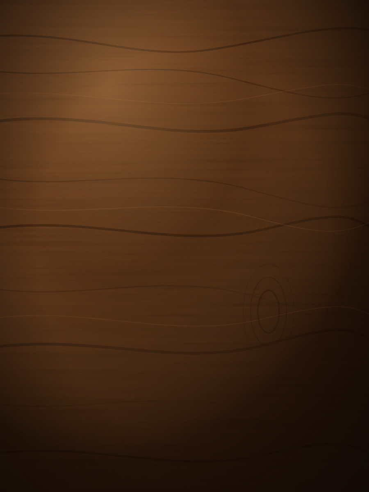
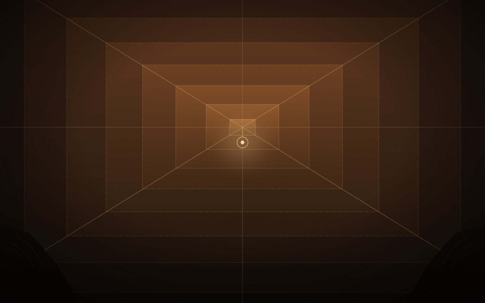
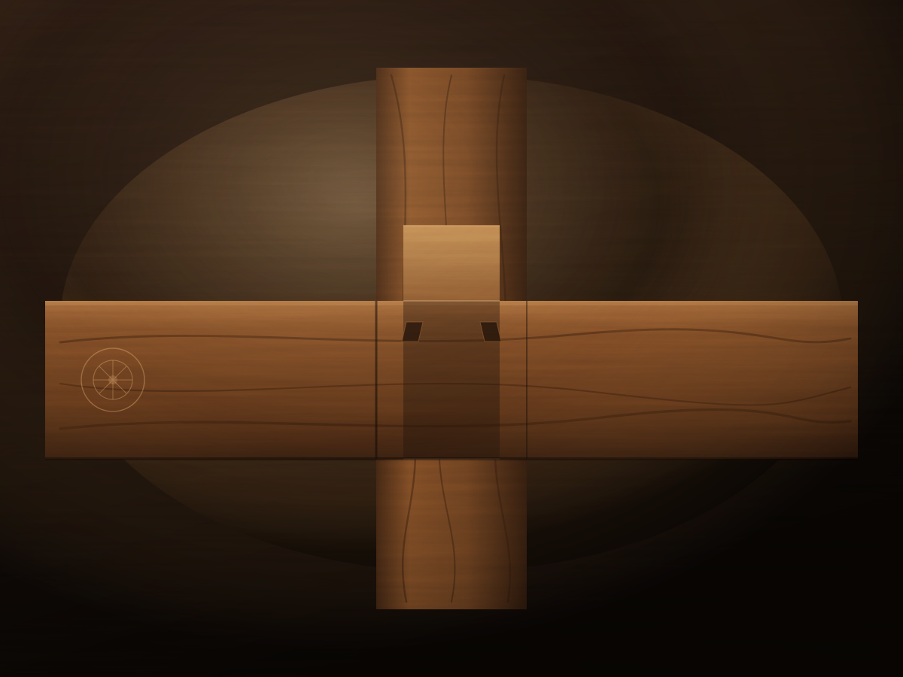
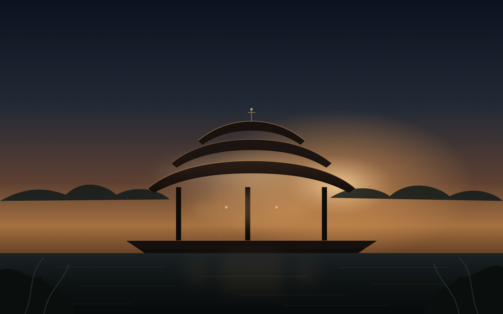

Pendopo Joglo Lawasan Kayu Jati 100 Tahun
JOGLO Lawasan
Pendopo warisan yang disusun ulang dari soko jati lawas — setiap batang dipilih, setiap ukiran dirawat, setiap ukuran dibangun sepenuhnya sesuai keinginan Anda.
Mulai Warisan01 Warisan
Kayu yang telah hidup seratus tahun tidak perlu dibuat baru. Ia hanya perlu dihormati.
Joglo lawasan kami lahir dari bangunan tua yang dibongkar dengan hormat: soko guru, blandar, dan penanggap dipilih satu per satu, dibersihkan tanpa menghapus jejak usia, lalu disusun kembali menjadi pendopo baru.
Setiap pendopo dibangun full custom — bukan diperbesar dari katalog. Anda menentukan ukuran, proporsi, arah hadap, hingga detail ukiran; kami menjaga agar setiap sambungan tetap setia pada konstruksi Jawa yang tanpa paku.
- 01 Soko jati lawas, diseleksi manual
- 02 Sambungan purus, tanpa sekrup
- 03 Ukuran & finishing full custom
- Usia kayu
- 100+ th
- Skala Soko
- 6ukuran
- Paku pada sambungan utama
- 0buah
- Kustomisasi
- 100%
02 Koleksi
Enam skala Soko.
Dari pendopo intim hingga balai agung. Jumlah soko menentukan luasan, kapasitas, dan bobot kehadirannya — semuanya tetap dapat disesuaikan.
03 Kriya
Dibongkar dengan hormat. Disusun dengan presisi.
Kemewahan sejati tidak terlihat dari permukaan, melainkan dari cara dua batang kayu berjanji untuk tidak pernah lepas.
- 01 Sambungan Purus
- 02 Kayu Jati Lawas
- 03 Ukiran Tangan
- 04 Atap Tumpang Sari
Full custom berarti Anda bebas mengubah proporsi, motif, dan dimensi — selama konstruksinya tetap jujur.

Sambungan Purus
Tanpa paku, tanpa sekrup. Hanya kayu yang saling mengunci, dipasang dengan tekanan dan kesabaran.
Kayu Jati Lawas
Serat rapat, warna dalam, retak yang justru menjadi tanda usia. Tidak ada kayu muda yang bisa menirunya.
Ukiran Tangan
Motif klasik Jawa diukir ulang mengikuti proporsi baru — diwariskan, bukan direproduksi mesin.

Atap Tumpang Sari
Tiga lapis atap, satu titik puncak. Struktur yang membuat pendopo terasa ringan meski berdiri dari kayu tua.
04 Proses
Empat langkah menuju warisan.
-
01
Konsultasi
Sampaikan lahan, kebutuhan, dan anggaran. Kami membalas langsung dari workshop — tanpa perantara.
-
02
Desain & Ukur
Denah, tampak, dan pemilihan soko. Anda menyetujui setiap proporsi sebelum kayu disentuh.
-
03
Kriya
Pemugaran dan perakitan di workshop, dengan uji coba sambungan sebelum dikirim.
-
04
Pemasangan
Bongkar, angkut, dan dirikan di lokasi Anda oleh tim yang sama sejak hari pertama.
05 Mulai
Warisan tidak menunggu.
Konsultasi langsung dengan pemilik workshop. Ceritakan lahan Anda — kami bantu menentukan soko yang tepat, lalu menyusunnya full custom.
Senin–Sabtu 08.00–20.00 WIB Melayani seluruh Indonesia